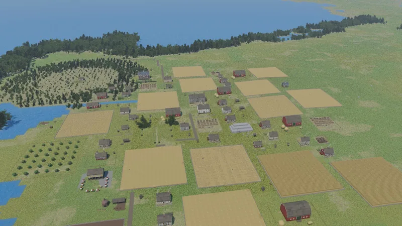
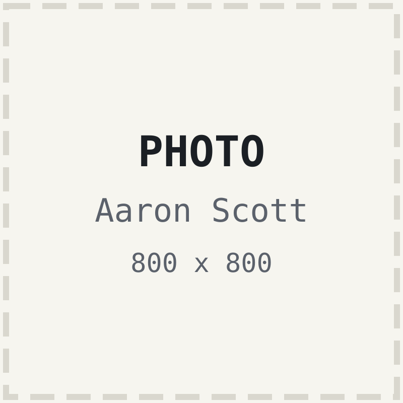

Data analytics
Turning public and operational data into answers you can check, from SEC filings to labor statistics.
See it in: Company Profitability, NJ Minimum Wage

Data analytics / Modeling / AI
Two Tail Technologies builds data, modeling and AI tools, then tests them against simple baselines and unseen data before we call them done. Founded in 2026 by twins Aaron and Mark Scott.
What we do
Turning public and operational data into answers you can check, from SEC filings to labor statistics.
See it in: Company Profitability, NJ Minimum Wage
Forecasts and simulations scored on data they never saw, against the simple rule they would replace.
See it in: Conflict Forecasting, Economic Planning Bot
Agents and assistants that work within the same limits a person would, with every answer traceable.
See it in: Chartered, Consulto Bot
Software that fits how frontline teams actually work, built by someone who has run the floor.
See it in: Consulto Bot
Products

Released 1.0.1: out now, free
A colonial city-builder for Windows where people and AI agents play exactly the same game. It asks whether a trained agent, limited to what a human player sees and does, can keep a colony alive in games it has never played.

Under development
An assistant that gives frontline staff accurate, cited answers from their company's own procedures, limited to what their role allows them to see.
Research pipeline: nine scoped studies in markets, policy and science. See all 9 research projects
Method
Every tool we build has to beat the simple rule it would replace, on data it never saw, and more than once. We report what we find, including null results, and improve in small, tested steps.
Why it matters to you: you see what a tool can and cannot do before you depend on it, including when the honest answer is that a simpler approach works better.
About
Two Tail Technologies builds data analytics, modeling and AI tools. It was founded in 2026 by twins Aaron and Mark Scott. We take on practical problems in economics, markets, business operations and science, and use whatever each one calls for: machine learning, simulation, forecasting or a simple rule when that serves better.
Aaron came to the work through restaurant operations and politics, Mark through academic research and machine learning. Together they examine each problem from both sides: how it works in practice and how it holds up in the data.

Co-founder / client relations and operations
Leads client relationships and operations, and is the first point of contact for products, pilots and client work.

Co-founder / development and data
Leads development and data work, from model design and testing to the software that ships.
We take on products, pilots and client work.